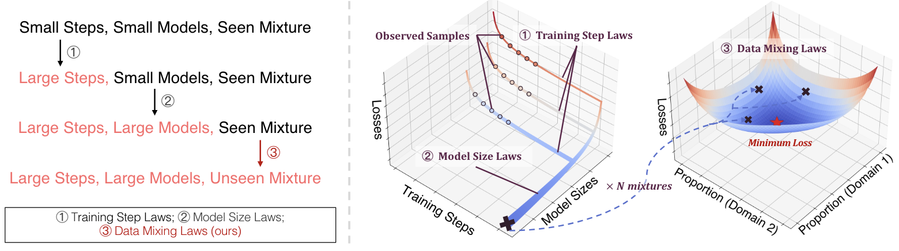
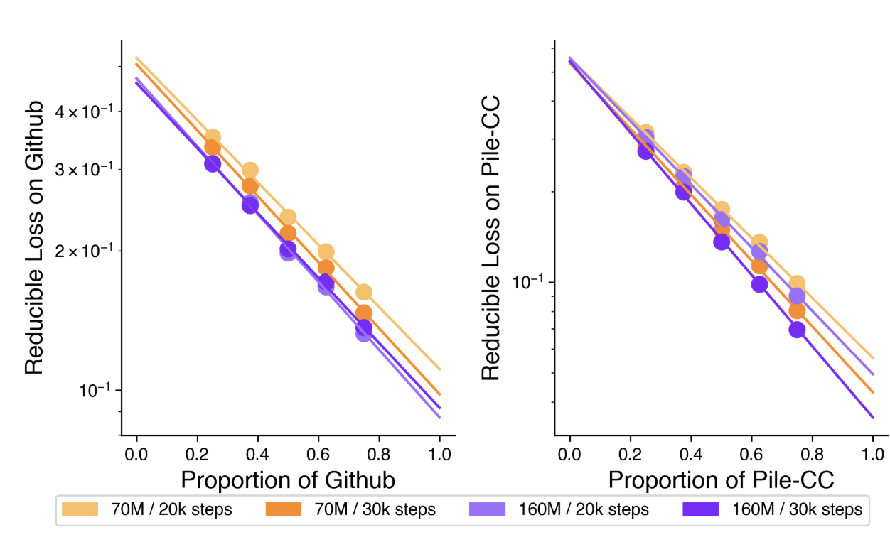
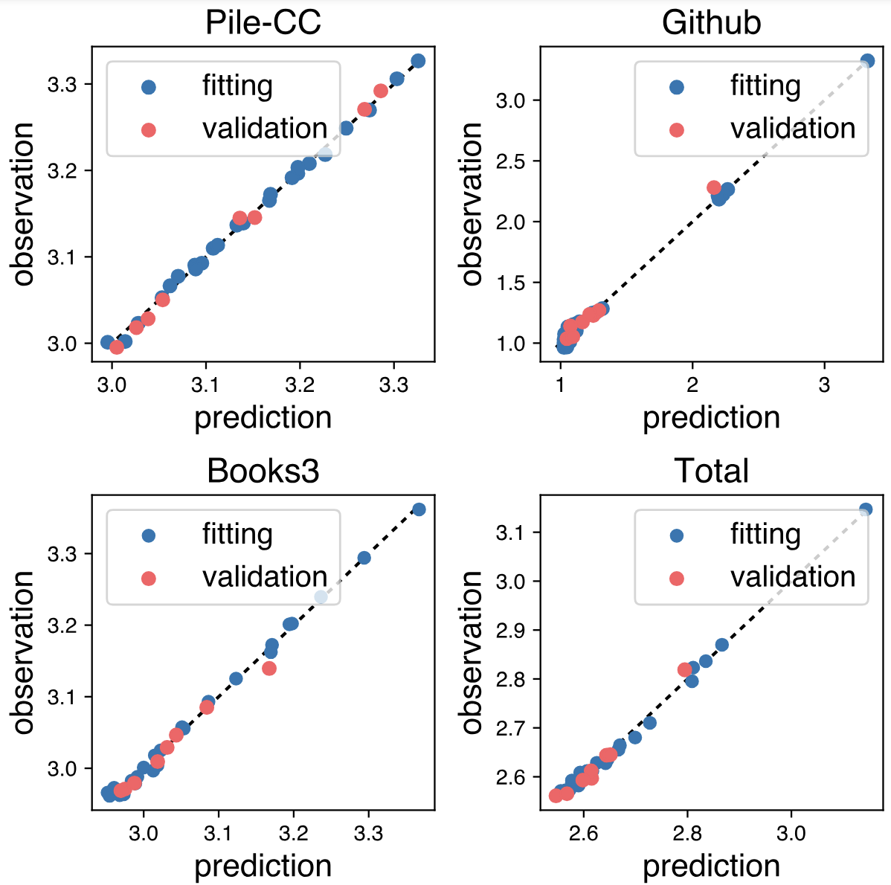
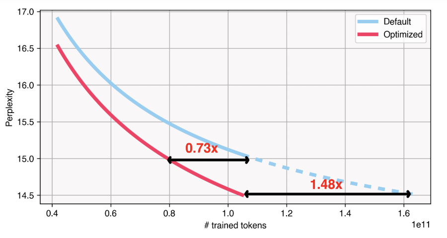
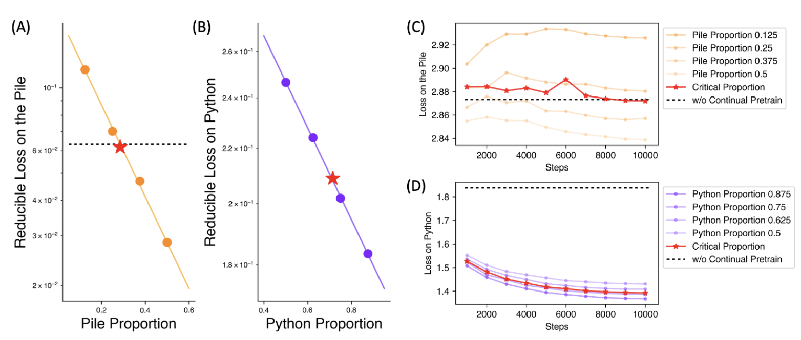

Introduction
Pretraining data for large language models (LLMs) are typically a mixture of multiple domains (e.g., internet data, academic papers, cods, multimodality data, among other). These data interplay with each other, showing complex interchangeable, unrelated, or contradictory relationships
On the other hand, the advances in scaling laws
Furthermore, with the ideas of scaling laws, we can experiment on small scales and apply scaling laws to predict the performance of corresponding data on large-scale training. We can then utilize the predicted losses to establish the data mixing laws to optimize the data mixture for large-scale training. We summarize this pipeline in Fig. 1.

Our work has unveil and validated the data mixing laws as well as the data mixture optimization pipeline. By predicting the overall validation loss, we optimize the training mixture of RedPajama for a 1B model trained on 100B tokens and achieve performance comparable to a model trained on default mixture for 48% more steps. Further applying our data mixing law to continual pretraining can accurately find the proportion that avoids catastrophic forgetting while introducing new capabilities efficiently.
The proportions of data mixtures influence model losses in a quantitatively predictable way
To discover the data mixing laws, we encounter two challenges posed by their characteristics.
- Multi-variables: For the data mixing laws involving K domains, there are K-1 degrees of freedom in the mixture proportions. The increase of variables considerably enlarges the scope of potential functions thereby complicating the identification of the function form.
- Nonmonotonicity: A monotonic relationship between losses and the proportion of any domain indicates that a lopsided mixture can achieve minimum loss without endeavors to balance domain proportions, which contradicts the practice. Therefore, differing from existing scaling laws that loss monotonically decreases with the scale of concerning factors, the data mixing law we study should accommodate non-monotonic functions. This nonmonotonic nature adds another layer of complexity to our analysis.
Two Training Domains, Single Validation Domain
Fig. 2 demonstrates the predictability of domain losses when training on a two-domain mixtures with different mixture proportions.

where L_iis validation loss on domain i, r_iis the mixture proportion of domain ic_i,k_i,t_{ii}parameters to fit.
Multiple Training Domains, Single Validation Domain
To accommodate real-world pretraining data that mostly contains more than two domains, we extend our investigation into multiple domains. We base our conjecture of possible forms on the following two principles.
- Compatibility: The form can reduce to that in previous section if the number of training domains is 2
- Symmetry: Any exchanging of variables should not change the functional form.
Through experiments, we find
accurately fits into and predicts the losses under differnt training data mixtures, whereL_iis validation loss on domain ir_jis the mixture proportion of training domain j, c_i,k_i,t_{ii}are parameters to fit. The results are in Fig. 3.

Multiple Training Domains, Multiple Validation Domains
We further loosen constraints that the validation data are from one of the training domains. We first consider the validation set to be a known composition of the training domains and then free this requirement for more general cases of arbitrary validation sets. These correspond to the two strategies we fit the data mixing laws, which we elaborate on as follows.
Explicit domain aggregation. Considering a validation sets containing K domains with proportionss_{1\dots K}, the validation loss can be written into the weighted sum of domain losses.
Implicit domain aggregation. A limitation of explicit domain aggregation is that we still need to acquire the components of validation data in advance. This can be inconvenient if the validation set is collected separately from the training ones. For instance, the validation data may come from real-world user queries that cover unknown compositions of various domains. To remove the constraint on validation components, we assume that we can decompose the validation data into K implicit domains whose losses are predictable with the previous data mixing laws for single validation domains. Similar to explicit domain aggregation, we weighted sum the loss of each implicit domains but treating their proportions s_{1\dots K} as learnable parameters as well and fit the overall data mixing laws end to end.
Fig. 4 demonstrate an experiment on five training and validation domains. It shows that implicit domain aggregation fit on par with or better than explicit domain aggregation when the number implicit domain is no fewer than the actual ones.

Nested scaling laws predict losses trained on various mixtures using only small-scale experiments
While data mixing laws enable us to predict the performance of models trained on unseen mixtures, the requirement to fit the laws involves training multiple models across diverse mixtures with model sizes and token counts identical to the target ones. Furthermore, we must repeat the experiments for each target model size and training dataset. This results in expensive costs thus hindering the practical value of our data mixing laws
We thus wonder whether we can obtain the losses of different mixture proportions without training at large scales. Fortunately, this idea gains endorsement from existing experiences that verify the impressive extrapolation of scaling laws of training steps and model sizes. We can train small models with few training steps on different mixtures, and fitting scaling laws on them to estimate the losses of the target model size and the target number of training steps. We can then use the predicted losses to fit a data mixing law and search for the optimal mixture. The pipeline is in Fig. 1.

We apply the proposed pipeline to optimize a 1B model trained for 100B tokens on RedPajama to minimize its validation loss. We adopt the validation set of the Pile to mimic the scenario where validation data are collected separately from the training data. The result suggests that training on the optimzed mixture achieves the performance of models fully trained on the default mixture. And after full training, the optimzed one produces a performance that require 48% more steps if we train on the default mixture as estimated.
Continual Pretraining
We further investigate whether our data mixing laws are also applicable to continual pretraining, which only differs from pretraining by model initialization. Typically, people continually pretrain a pretrained model to inject knowledge from a new domain
We find that our data mixing laws are also applicable to continual pretraining, as shown in Fig. 6. With this findings, we can figure out the critical mixture proportion that maintain the model loss in the original pretraining domain which also efficiently enhancing abilties in the new domain.

Conclusion
In this work, we explore the quantitative predictability of how data mixtures affect model losses, i.e., the data mixing laws. Our research covers training data from two domains to multiple domains, and validation data from a single domain to combinations of multiple unknown domains. Using data mixing laws, practitioners can estimate the performance of the model on unseen mixture proportions before actual training, thus effectively helps select an ideal data mixture. We further propose nested use scaling laws of training steps, model sizes and our data mixing laww to predict the model performance of different data mixture only through small-scale experiments. The experimental results show that our method effectively optimizes the mixture proportions, resulting in better performance during pre-training, and can guide selecting mixture proportion during continual pre-training to avoid catastrophic forgetting. In summary, we have made a preliminary attempt on the quantitative method of curating data. With the increasing interest in data engineering, we hope that our exploration will facilitate further quantitative research and theoretical analysis in this area.